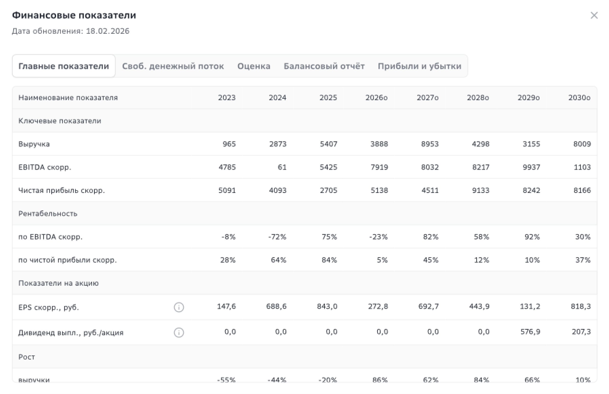
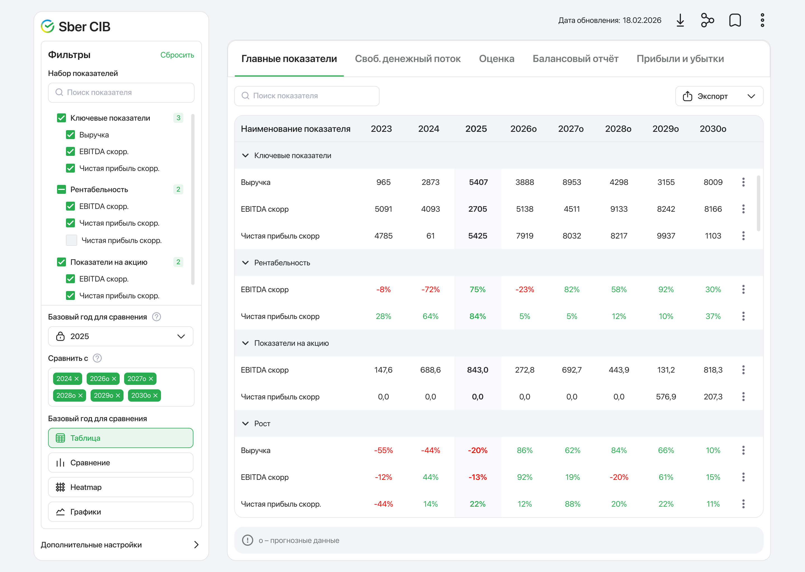

Case 02 · Sber CIB
Sber CIB
Спроектировал специализированную панель фильтров с закреплением базового года, независимым скроллом и поиском срезов. Внедрили закреплённую шапку таблицы, альтернативные режимы визуализации и стандартизировали токены дизайн-системы Сбера.
Аналитики банка ежедневно сопоставляют десятки срезов за многолетний горизонт:
01
Потеря базового периода
При горизонтальной прокрутке десятков лет (исторических 2023, 2024 и прогнозных 2026о, 2027о) аналитик терял точку отсчёта и не мог сопоставить цифры.
02
Информационная перегрузка
Таблица отображала все сгруппированные метрики подряд, включая пустые срезы без данных, что вынуждало совершать лишние вертикальные скроллы.
03
Потеря контекста строк и колонок
Отсутствие фиксации заголовков колонок и названий параметров приводило к ошибкам считывания финансовых мультипликаторов в нижней части экрана.
04
Единственный табличный вид
Разные аналитические задачи требуют разных срезов: сравнения отклонений, тепловых карт плотности данных или динамических трендов.

До · перегруженная монолитная таблица без фильтрации срезов и фиксации базового периода
Четыре ключевых предположения, на которых построен новый интерфейс:
01
Фиксация базового года
Базовый год редко меняется в рамках одного сеанса анализа, поэтому он вынесен отдельно и закрепляется, снижая риск случайных правок.
02
Мультимодальность отображения
Добавлены режимы «Таблица», «Сравнение», «Heatmap» и «Графики» с быстрым переключением в один клик без перезагрузки данных.
03
Сохранение фокуса при скролле
Закреплённая шапка и независимый вертикальный скролл таблицы удерживают названия показателей и временной масштаб всегда на виду.
04
Автономный скролл блока фильтров
Число срезов превышает высоту экрана: выделил фильтрам независимую область прокрутки, сохранив доступ к настройкам из любой точки страницы.
Полноэкранный Web-дашборд с панелью срезов и умной таблицей

После · чистая структура, закреплённые оси и гибкая настройка сравнения периодов
Панель фильтров и таблица срезов
Цветовые токены Сбера и компоненты
Антиплагиат
Next case →
Silkway